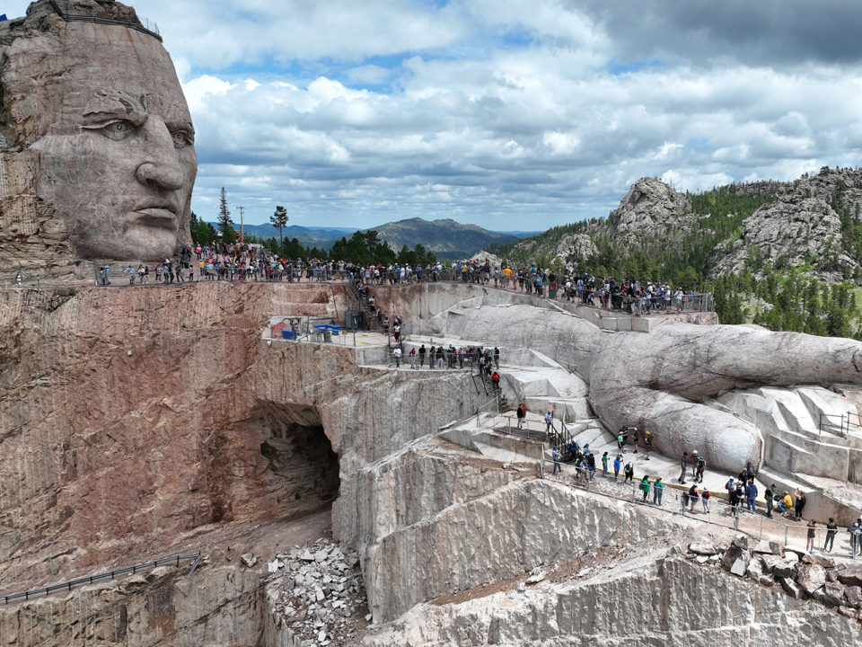
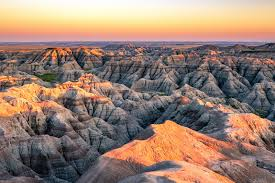
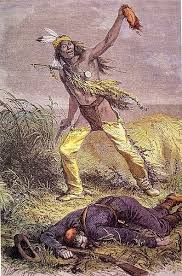
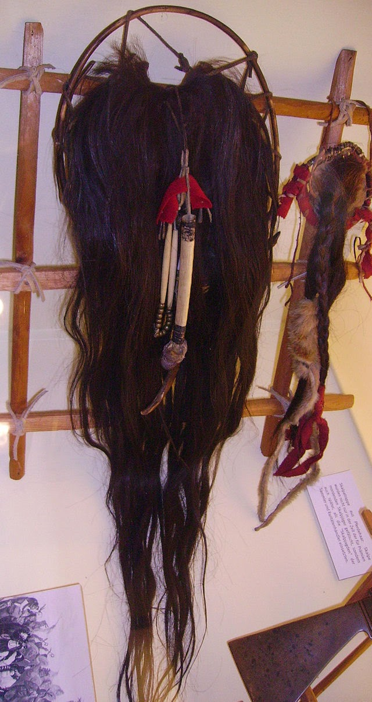
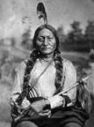

South Dakota
Elaborado por Alejandri Rodriguez Ana Laura y publicado el 19 de Septiembre de 2024
South Dakota

Los nativos tallaron una roca con la silueta de uno de sus lideres mas importantes conocido como Caballo loco, este monumento es visitado por muchas tribus y se puede decir que es un atractivo de estas planicies por el significado que los nativos le tienen a esta persona historica.
Cuestionario

South Dakota es un lugar de planicies donde habitan nueve tribus originarios de ahi, las cuales se encuentran dentro de reservaciones nativas para la proteccion de las personas, la fauma y la vida silvestre que habita en estas tierras, las cuales estan siendo amenazadas por los colonos blancos quienes se han encargado de intentar exterminar todo lo relacionado con las tribus.
Las peliculas de estados unidos publican una imagen completamente distinta de los nativos americanos, donde promueven la superioridad de ellos y la inferioridad de estos, sin contar que se han encargado de desprestigiar el nombre y hacer crear a la gente que ellos estaban locos, matando y cortando las cabelleras a las personas que veian, lo cual, es una mentira ya que en realidad quienes cortaban las cabelleras eran los americanos despues de asesinar a los nativos para para vender el largo cabello que ellos portaban.

Mentira que los nativos cortaban cabelleras

La verdad es que los blancos eran quienes cortaban las cabelleras

La realidad es que caballo loco y Toro sentado lograron salvar a muchos nativos americanos y emboscar a Custer para luego matarlo y actualemnte esta enterado en las tierras de los nativos americanos, este fue un suceso triste por que fueron anos de masacre y matanzas contra ellos, por que los blancos como les decian los nativos americanos querian apoderarse de las tierras y animales que vivian ahi, pero los nativos se opusieron y tuvieron que recuru a unirse con otras tribus para rastrear a los nativos y asi poder aniquilarlos, esta tribu fueron los pawnee quienes tenian una cierta rivalidad con otras tribus.